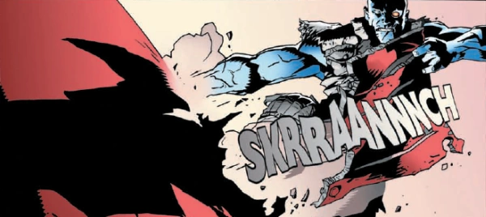

Tor Cyan looks like a Rogue Trooper clone, but when we first met him he was a medic in Mercy Heights, and there was no explanation as to why a Genetic Infantryman might be practising medicine in a strip that bore no other relation to the Rogueverse. But, 2000 AD is addicted to convoluted Rogueverse welding (see Fr1day), so Tor was spun out of Mercy Heights and turned back into a killing machine for a few series.
Art by Kevin Walker
| Story Title | Parts | Pages | w indicates a wraparound coverCovers | Year(s) | Issues | Writer | Artist | Colourist | Letterer |
|---|---|---|---|---|---|---|---|---|---|
From Rogue TrooperRemembrance Day | 1 | 7 | 0 | 1999 | Reprints: M316 (supplement)p2000 | John Tomlinson | Dave Gibbons | <-- | Dave Gibbons |
| Blue Murder | 4 | 24 | 1223: Greg Staples 1 | 2001 | Reprints: M316 (supplement)1223-1226 | John Tomlinson | Kevin Walker | <-- | Ellie de Ville |
Featuring Rogue Trooper (as a hallucination).Crucible | 2 | 12 | 0 | 2001 | Reprints: M316 (supplement)1250-1251 | John Tomlinson | Kevin Walker | <-- | Ellie de Ville |
| Refugee | 2 | 12 | 0 | 2001 | Reprints: M317 (supplement)1252-1253 | John Tomlinson | Kevin Walker | <-- | Ellie de Ville |
| World of Hurt | 3 | 18 | 1254: Jock 1 | 2001 | Reprints: M317 (supplement)1254-1256 | John Tomlinson | Colin Wilson | Janet Gale | Ellie de Ville |
| The Dead Sorceror's Coachman | 1 | 7 | 0 | 2001 | Reprints: M317 (supplement)1263 | John Tomlinson | Colin Wilson | Janet Gale | Ellie de Ville |
| Rahab | 1 | 12 | Art: Jock Colours: Chris Blythe 1 | 2002 | Reprints: M317 (supplement)1295 | John Tomlinson | Jock | Chris Blythe | Ellie de Ville |
Featuring Rogue Trooper (as mutated resurrection).Phage | 1 | 6 | 0 | 2002 | Reprints: M317 (supplement)1296 | John Tomlinson | Jock | Chris Blythe | Ellie de Ville |
Featuring Rogue Trooper (as a mental projection).No Such Place | 3 | 18 | 0 | 2002 | Reprints: M318 (supplement)1297-1299 | John Tomlinson | Jock | Chris Blythe | Ellie de Ville |
| year | episodes | pages |
| 1990 | 0 | 0 |
| 1991 | 0 | 0 |
| 1992 | 0 | 0 |
| 1993 | 0 | 0 |
| 1994 | 0 | 0 |
| 1995 | 0 | 0 |
| 1996 | 0 | 0 |
| 1997 | 0 | 0 |
| 1998 | 0 | 0 |
| 1999 | 1 | 7 |
| 2000 | 0 | 0 |
| 2001 | 12 | 73 |
| 2002 | 5 | 36 |
| 2003 | 0 | 0 |
| 2004 | 0 | 0 |
| 2005 | 0 | 0 |
| 2006 | 0 | 0 |
| 2007 | 0 | 0 |
| 2008 | 0 | 0 |
| 2009 | 0 | 0 |
| 2010 | 0 | 0 |
| 2011 | 0 | 0 |